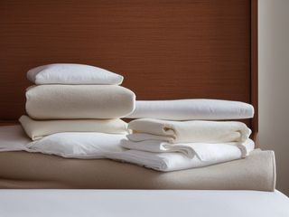
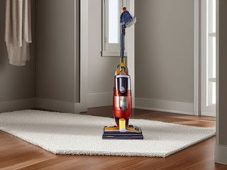
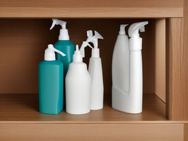
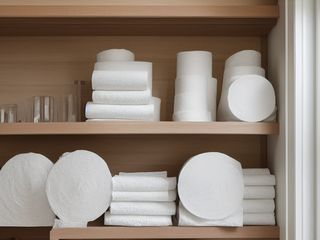
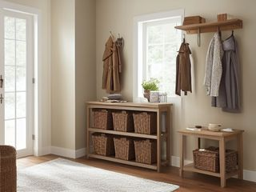

Room
Hall Closet: the darkest storage in the house, and the only one nobody owns
The hall closet is the darkest and deepest storage in the house, and the only one nobody owns. Everything that had to go somewhere ended up behind this door, stacked to the depth of your arm. Start with the shelf you cannot see the back of, because that is where the closet is lying to you about what it holds.
The 5 micro zones, in working order
A micro zone is one session, not a whole day. Finish one before you start the next.
Added together, the 5 sessions below come to about 3 to 5 hours for the whole hall closet. That is not one long day. Each session finishes on its own, so stopping after the first still leaves the room better than it was.
Start here. Empty one shelf onto the hallway floor before you touch anything else. A closet this deep cannot be sorted in place; you have to see the back wall to know what you own.
The micro zones of this room
Hall Closet
5 zones. Finish one before you start the next.
- 1The Linen Shelf Zone45-75 min
- 2The Cleaning Equipment Zone30-45 min
- 3The Cleaning Supply Zone30-45 min
- 4The Paper and Household Backstock30-45 min
- 5The Seasonal and Guest Zone45-75 min

The Linen Shelf Zone (45-75 min)
Holds the sheets, towels, and blankets the beds in this house actually rotate through.
The Cleaning Equipment Zone (30-45 min)
Parks the vacuum, broom, and mop so they come out in one motion and go back without a fight.
The Cleaning Supply Zone (30-45 min)
Holds the products you clean with, grouped so you carry the right handful to the right room.
The Paper and Household Backstock (30-45 min)
Keeps a reserve of paper goods, bulbs, and batteries so you never make a late-night emergency trip.
The Seasonal and Guest Zone (45-75 min)
Parks the things you use a few weekends a year: guest bedding, decorations, and travel gear.
Illustrations of each zone finished. Not photographs of real homes.
The kit for the whole hall closet
Every zone below draws from this. These are types of thing, not brands, and anything you already own that does the job is the right one to use. Each zone page names the smaller list that zone actually needs.
- Color-coded microfiber cloth set ×12 Wipe, dust, and dry surfaces, in the Shine pass. Wash by use color; avoid fabric softener.
- Neutral pH multi-surface cleaner Routine cleaning of sealed surfaces, in the Shine and Sustain passes. Verify surface compatibility; lock around children and pets.
- Compact vacuum with attachments Remove dust, crumbs, and debris, in the Shine pass. Use appropriate attachment.
- Keep, Relocate, Donate, Recycle, Trash container set ×5 Support rapid item routing during Sort, in the Sort pass. Do not block exits.
- Portable cleaning caddy Transport and contain cleaning inputs, in the Straighten, Shine and Sustain passes. Secure chemicals from children and pets.
- Portable label maker Create durable standardized labels, in the Standardize and Sustain passes. Follow surface and adhesive guidance.
- Removable write-on labels Create temporary or adjustable visual controls, in the Standardize pass. Test on delicate finishes.
For this room
- Cleaning note. Closed dark spaces hold damp. Wipe the shelf boards and let them dry completely before linens or paper packs go back, and leave the door standing open for an hour after you finish.
- The trap. Almost everything in this closet arrived because it had no other home, not because it belongs here. Ask of each item which room it actually serves, and walk most of it back there.
When you want it off the screen
The whole Hall Closet on cards you can carry
Everything above is free and stays free. The Hall Closet Pack puts these 5 micro zones on 30 printable cards, nine to a page, plus the standards sheet for the room. It is for the part where you are stood in here with wet hands and would rather not be holding a phone.
The Hall Closet Pack, 9 dollarsOr all twenty rooms, 19 dollarsOr draw a card free
The Hall Closet on its own is 9 dollars for 30 cards. All 114 micro zones is 19 dollars for 684, which is more cards for the money by a wide margin. The room pack is here because you came for the hall closet, not for the house.
Or have somebody run it with you. A one hour virtual consult is 250 dollars: we work out what the hall closet is supposed to do, what is stopping it and which zone to start on, and you keep a written plan.
See what a consult covers, 250 dollars
Not ready to pay for that either? Ask which zone first, free
The other rooms
The same six passes, room by room. Every one of these is broken into its own micro zones.
All 20 rooms and 114 micro zones on one page